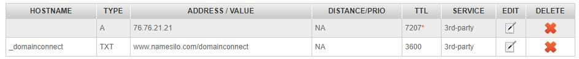

搭建个人网站（2）：Github+Vercel建站和DNS
在购买好自定义域名之后，下一步就是去找个服务器来放置我们的网站了，但国内服务器要备案，国外的服务器又贵，既不想备案又不想花钱的话，那 GitHub Pages 是个不错的选择。
但GitHub的问题在于国内访问速度很慢，如果主要是面向国内的话建议使用 Vercel （原本叫Zeit）。Github Pages的教程已经够多了，但Vercel的教程很少，所以这里主要讲如何用 GitHub + Vercel配置个人网站。
Why Vercel
相比于GitHub Pages，国内访问Vercel的速度更快，而且无需科学上网，下面是我自己的一个网站使用Vercel前后速度的对比（使用了二级域名，vercel似乎并不能将一个仓库的站点作为另一个仓库的子目录），访问速度平均提升近7倍。
GitHub
如果没有GitHub账号的话需要申请一个，注意不要使用QQ邮箱作为主邮箱，因为Vercel会自动拒绝使用QQ邮箱的账号。如果已经用QQ邮箱注册了GitHub，可以到Setting -> Emails里修改自己的主邮箱。
然后在GitHub里建一个仓库来存放自己的网页，仓库的名字可以随便取，然后可以上传个index.html方便之后预览，e.g.
Vercel
建立好GitHub repo之后，就可以去配置Vercel了。
进入Vercel官网，点击主页上那个大大的Start Deploying，它会让你选择一种登录Vercel的方法，支持使用GitHub，GitLab和Bitbucket登录，这里我们选GitHub，然后就会看到下面的页面：
输入用来存放网站的GitHub Repo的地址，然后点Continue，他会让你选择包含source code的文件：

（PS：如果是第一次使用Vercel的话，上面两步里会弹出在GitHub中安装vercel的许可，同意即可）
这里我们没啥source code，所以直接continue即可，就会出现下面的页面：
如果你需要编译souce code的话，可以看看framework preset里有没有设定好的配置，如果是像我这样只是个静态网页，直接打开index.html就可以使用的话就选择other，然后build command打开override，里面什么也不用填，这样vercel就会直接将你的网站呈现出来，不进行改动。
设置好之后点Deploy即可。
顺利的话稍等片刻就会弹出部署成功的页面，还有浮夸的撒花233。
如果一直显示queued的话，可以联系vercel的support，回复速度很快，基本一天就能解决（记得查邮箱）。
部署完成之后可以点击visit进入网页看看效果：
配置自定义域名
进入这个deployment的界面：
点View Domains就会直接跳到配置域名的选项：
输入自己的域名，然后点Add，它会弹出来一些需要做的配置，接下来需要去我们的域名提供商那里根据Vercel给出的要求进行配置。
我是在NameSilo购买的域名，所以就进入NameSilo的管理页面：
选中需要配置的域名，点击上方的Change Nameservers可以更换Name server（我这里已经改过了），点击右侧小小的蓝球可以配置DNS。
把Name Servers改成Vercel提供的两个server
这个配置会在48个小时内生效，我的话十几分钟就生效了。
然后按Vercel的要求把DNS改为：

这个会在15分钟内生效。
等这两个改动都生效之后就可以用我们自己的域名访问刚刚建立的网站啦~
以后想要修改网站的话，只需要将改动push到GitHub上，vercel会自动把改动同步过来，完全不用管，超省心。
在一级域名配置好之后，也可以直接在vercel中使用二级域名，无需进行额外设置。
本博客所有文章除特别声明外，均采用 CC BY-SA 4.0 协议 ，转载请注明出处！